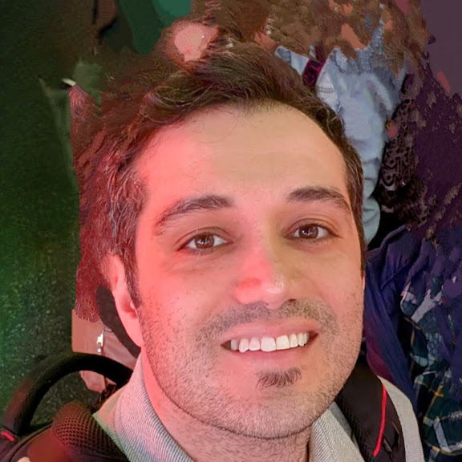

AI research scientist, Meta
AI research scientist at Meta, building multitask models for sensory data, with more than a decade of machine learning across audio, health, search and brain-computer interfaces.
New York City · ramin.audio@gmail.com

174 deep dives, each with interactive toys. Pick a category to browse its tutorials.
The math the other tabs lean on, drawn as pictures. What does a matrix actually do to a vector?
The classics that still run the world. How much can you learn without a single GPU?
0.5 draws the boundary.CNNs (convolutional neural networks, networks that slide small pattern detectors over an image), RNNs (recurrent neural networks, networks that read a sequence step by step and carry memory forward), loss functions (the scores that measure how wrong a prediction is and guide training), scaling (how models change as they grow in data, size, and compute). What does a kernel (one of those small pattern detectors, a little grid of numbers slid over the input) actually see?
Learning from unlabeled data: pairs pulled together and pushed apart, methods with nothing to push against, rebuilding hidden patches, and what makes it fail.
No labels, no dataset, just a scoreboard. Learning from rewards: the agent acts, the world answers with a score. How does anything learn to win?
Transformers are models built by stacking attention blocks. Attention is weighted averaging: each position looks at the others, weighs how much each one matters, and averages their information with those weights. So why does the bill come out quadratic (growing with the square of the length, so doubling the input makes the work four times as large)?
LLMs (large language models, giant models trained on text) in practice: choosing each next word, sending each token to a few expert networks (mixture of experts), watching what they understand (reading the lists of numbers inside the model that describe what it has understood so far), catching misuse before they answer, and letting them read images. DeepSeek-R1 rounds out the LLMs category, a reasoning model trained with GRPO on rewards a program can check. How RL aligns them is in the RL tab, under Aligning Language Models with RL.
How a model learns to draw new images: GANs and their training troubles, then diffusion, which adds noise on a schedule and learns to take it away.
Half the bits, same model. Which weights (the learned numbers inside the model) can you cut and get away with it?
If analog (a continuous signal that can take any value) is a ramp, an analog-to-digital converter (ADC) is a staircase. Where do the ghosts (the fake low frequencies a high frequency folds into when it is sampled too slowly) come from?
6 dB rule, each extra bit buys about 6 dB of signal-to-noise ratio, made playable.One model, many tasks. When the tasks fight, whose gradient (the arrow that points where its task's loss rises fastest; training steps the other way) wins?
I studied at the University of Illinois at Urbana-Champaign and began my career in audio machine learning, with internships at the Advanced Digital Sciences Center in Singapore and at Adobe. At Dolby Laboratories I worked on deep learning and audio codecs. As the first hire at CurieAI, I helped develop models that detect respiratory symptoms from noisy audio and scaled the technology to hundreds of patients.
I then moved into natural language processing. At UnitedHealth Group I was the first ML lead on the team and built natural language search for health benefits, which became the foundation of an enterprise-wide semantic search platform. As ML lead for the enterprise team, I trained language models from scratch, grew the team to more than 50 people, and brought my background in sensory signals to how the company applied machine learning to search.
At Precision Neuroscience I applied signal processing and machine learning to brain-computer interfaces, translating brain signals into real-time actions. I am now an AI research scientist at Meta, working on multitask models for sensory data.
University of Illinois at Urbana-Champaign
M.S. & B.S., Electrical & Computer Engineering
GPA: 3.97/4.0 (M.S.), 3.86/4.0 (B.S.)
08/2011 - 12/2016